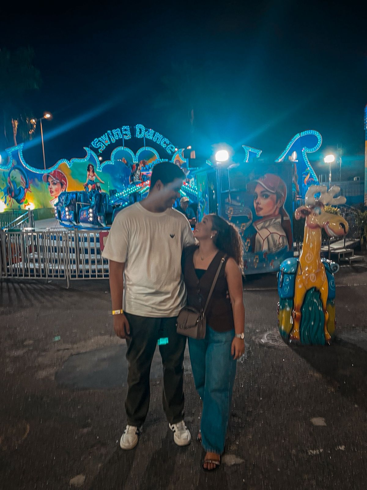

dois meses juntos
26 de fevereiro · 26 de abril
dois meses de felicidade
“Você tem sido a benção que me enriquece.”
nossas memórias
cada foto, um pedacinho do que construímos juntos

do meu coração
Para Nicoly, minha cacheada ✦
Esse tempo com você parece que já é uma vida, porque estar com você é prazeroso demais. Parece que já estamos juntos há anos — e mesmo assim, cada dia ainda me surpreende.
Eu amo o jeito que você busca me entender, que me apoia, e principalmente seu jeito divertido que sempre me faz rir, não importa a circunstância. Sua risada é o meu lugar favorito.
Amo sua fé, seu amor pelas almas, e como você sempre dá o seu melhor em tudo que faz. Isso me inspira todo dia.
Esses dois meses têm sido um privilégio. Têm sido uma bênção, porque tenho visto como a vontade de Deus é boa, perfeita e agradável.
Você não é só minha namorada — você é a mulher com quem eu tenho certeza que vou passar a vida ao lado. Que será minha esposa. Esse é o meu objetivo com você. Não estou vendo se você é pra casar — você me deu essa certeza há muito tempo. Eu encontrei em você a minha esposa.
E como a Palavra diz: “Quem encontra uma esposa alcançou o favor do Senhor.”
os nossos lugares
cada lugar guarda um pedaço de nós